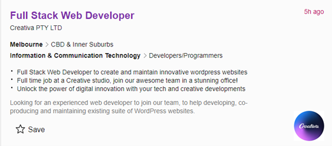
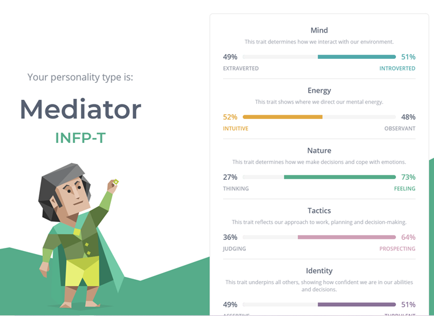
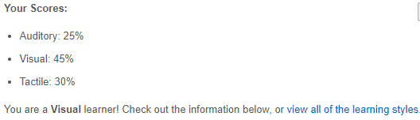
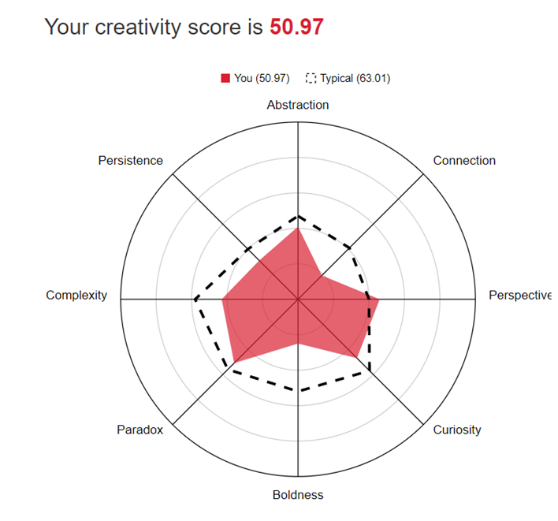

kelvin tran
I am of Vietnamese ethnicity, but born and raised in Australia, Melbourne. I am currently studying a Bachelors of Information Technology, previously transferred from Bachelor of Computer Science at RMIT. I can only speak English and understand a bit of Vietnamese. My hobby is playing games with friends on the PC. My most played game is League of Legends which I've played on and off since primary school (Grade 5). I am quite a competitive person, so LoL encompasses what I want in a game, a competitive side and as well as being able to be played socially with friends.
 Scroll Down
Scroll DownMy interest in IT has mostly stemmed from using technology at a young age, and how rapidly it has developed into what it is today. Some things i’m interested in is website development, cloud computing, and security in computing. After studying computer science, I realised I was more interested in the IT subjects rather than the math/logic subjects, so I decided to commit to IT this year. As I often use the internet, and i’m always using a phone/computer, my life has always revolved around technology, so my interest in Information Technology is always growing as I continue to use them everyday. I’ve already been at rmit for the past 2 years doing a Bachelor of Computer Science. I was familiar with how subjects were taught and wanted to transfer the IT units I did. I enjoyed learning the IT aspects a lot more than the logical/maths aspect of Computer Science which made me choose Bachelor of Information Technology here again. RMIT is also close to me and in the city. Coding languages commonly used in IT jobs, knowledge of the many areas of IT and developing skills either specific or widely applicable to all workers in IT. Depending on what pathway I choose in IT, i’ll gain the essential skills that I can further develop.
Ideal Job
A full stack web developer is a web developer that is involved in both the front end development (user-facing software) and the back end development (server-side). I find this job appealing as i’ve always been fascinated by how websites can be so creatively appealing and interact with the users in many ways, and also have many functionalities and other things occurring in the background that the user cannot see. Websites are used by everyone, having a website that can be understood by a vast majority of people will feel like a great accomplishment for me. Seeing websites/platforms like google, youtube, ebay, reddit and how much they can affect our lives in knowledge and the decisions we make is very substantial. Thinking about how different our lives will be without these websites and how well they’ve been developed is very inspiring to me. I’ve always had an interest in coding as well, but never really liked the mathematical aspect of some software programming. I believe website development does not require much of this, so it is easier for me to see myself doing website development.
The requirements for this job are HTML, CSS and PHP coding skills, being able to write code that is easy to understand and being able to develop, test, and operate around bugs. Being able to communicate progress while using project management programs, deliver ideas and engage with the design team are valued skills. Also knowledge of web servers and DNS will be useful. The company seeks 3+ years of experience with PHP coding, and the ability to work at front-end and back-end development. It is also important to be able to work with their marketing team and UX designers.
I currently have experience using Java, but have only done projects assigned from Programming Techniques. Even though Java is not needed, it is a starting point to learning the other coding languages. I have also had experience using some project sharing/management softwares like github/gitbash and ClickUp for project progress.
I will attempt to gain the required skills for website development through completing a Bachelors of IT and potentially a Website Development program at RMIT after. Also once I've acquired the fundamentals of website development, I could attempt to start my own projects. Some basic website ideas are a simple flash game or developing a forum for games/socialising, which relate to my interest in games. For now I can use free resources on google or youtube, e.g w3schools, ask my teachers for guidance and constantly look for technology skills that modern website developers are beginning to require. Getting as much experience will help me in getting a web developer job, so continuously looking for training jobs/work experience in Melbourne regarding website development will be very useful.
Profile
As my personality is a mediator, I can work with co-workers that can be easily annoyed/aggravated when discussing creative ideas or how to do things in development. This will be useful in maintaining a healthy team relationship and not letting our own perceptions confine our progress or interfere with our emotions. My distinct personality traits are my feeling nature and prospecting approach, which I believe will help in communicating with co-workers in a manner that will make it easy for us to brainstorm without doubts in mind while being open to unique and controversial opinions. When forming a team, I think I would work better with less judgemental and more mindful people, as this would make it better for us to share ideas without letting negative emotions hinder us. It would also be better for me to work in smaller groups to get to know people on a more personal level. I still believe I can adapt to everyone’s personalities. This test is accurate, but i’d say i’m more towards the introverted side of the mind scale.
http://www.educationplanner.org/students/self-assessments/learning-styles-quiz.shtml?
Knowing that my learning style is visual, i’m likely to understand my coworkers through oral and visual presentations, recordings or physical demonstrations. Independently my ideal learning methods would be reading notes and watching videos. My weakest learning style is auditory, which can be an issue when trying to understand others without visual stimuli. When forming a team, it would be best if I work with co-workers that prefer to demonstrate and showcase their ideas physically. An example is physically showing a bug on their screen, drawing out ideas on a whiteboard and physically seeing how they operate programs. This test is accurate as I have always resorted to taking notes and reading over them and watching videos (online lectures) for studying/learning.
My creative score is lower than average, showing that i’m lacking in all aspects except perspective. Having a higher than average perspective will help with creating interfaces in the view of my target users, while also being useful in viewing an idea in many ways. For forming teams, it could hold me back when attempting to find solutions/ideas that aren’t what I have previously learnt. Especially being a web developer, being below average in most creativity aspects can be an issue due to the many possibilities that a website can have. I believe this test is quite accurate as I have always struggled with creativity but could see things from different viewpoints. Boldness being my weakness can be an issue in a team environment when I have an idea that I'm unsure of speaking publicly.
Project Idea
My project idea is developing a game that tests both reaction time, decision making, general knowledge and ability to process information. You can be matched against a friend or a random opponent. There will be 4 similar pictures on a phone/computer. A sound will play saying a word or a sound effect that is a hint to the photo that is correct. First one to 5 correct answers wins. The game will be designed as an app for phones, catering to everyone.
This game requires many skills can be fun and competitive. It challenges a person’s trivial knowledge, their reaction time and deduction/decision making, which I believe many people can use to either learn more about the world while simultaneously having fun competing with others. Educational games are hard to come by, and one that is challenging, social and unique can entertain many users. All these aspects of the game are what I find interest in when I play games, so to combine them would personally make a game thats complete and interesting. I took inspiration from the game 4pics 1word, a game that I played a lot when I was younger. I believe this game is more challenging with the added depth from sounds, as well as the competitiveness of vsing someone in real time.
The game will begin with an option to choose Online, Versus Friend, or Practice. Online and Versus Friend work in the same way, except Online is a random opponent while Versus Friend is a friend of choice. Once the game begins there will be 4 pictures shown. A countdown will begin where a sound will play after, which will provide a hint towards which picture is correct. These hints can range from sound effects, names and details. For example if there are 4 pictures shown of phones, an Oppo, Samsung, Google Pixel and an Apple, a sound that can be played can be like biting an apple or saying Steve Jobs. Once an answer is selected you cannot pick another. If correct you win the round, if not you wait for the opponent to pick or timeout. First one to 5 correct answers wins. The game can have a rank system, where the lower ranked players have easier distinguished pictures to choose from with easier hints, while higher ranks will have very similar photos with vague hints. With the many possibilities in this game, many photos and concepts will have to be implemented in order to reduce repetitiveness and to make it more broad and fair.
A game engine like Unity or any app coding software will be used. Stock photos need to be supplied from valid organisations like stuttershock, and free game assets for the prototype. An android and apple will be needed for testing, and a computer to program in. Github will be needed for versioning.
Coding skills, most likely C# will be needed, to write the program. Other coding skills might be required depending on the software used to write the program, most likely an object oriented language. Being able to use an IDE to run and debug will be important. Being able to use gitHub effectively will help especially if there is a team working on the project.
If this program is successful, it will be a game that can be accessed by all modern smartphones, and can be played by people of all ages whether they want to compete, test their trivia or just play for fun socially with friends. There will be widely knowledgeable people with good reaction time having high ranks, and new players or people who aren’t as well versed in trivia towards the bottom. There will a lack of repetitiveness in concepts and photos, and the topics will cover a very wide range. This game is a solution to people who want to learn trivia but are too lazy to research, for people who want to kill time, have casual fun, or to compete anywhere in the world. This game from the development side will really challenge how much photos and ideas we can cover in a single game.